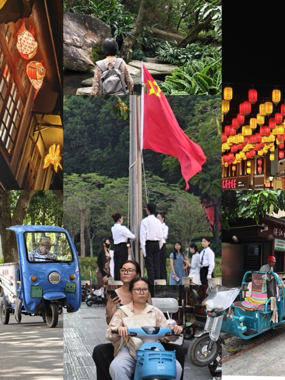
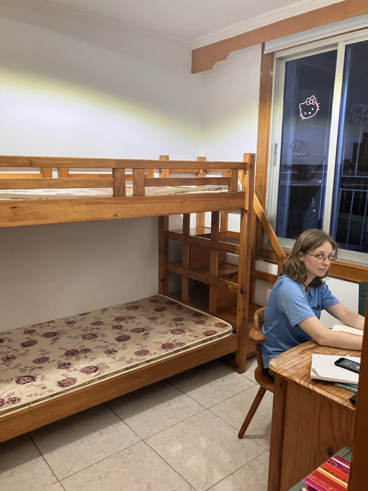
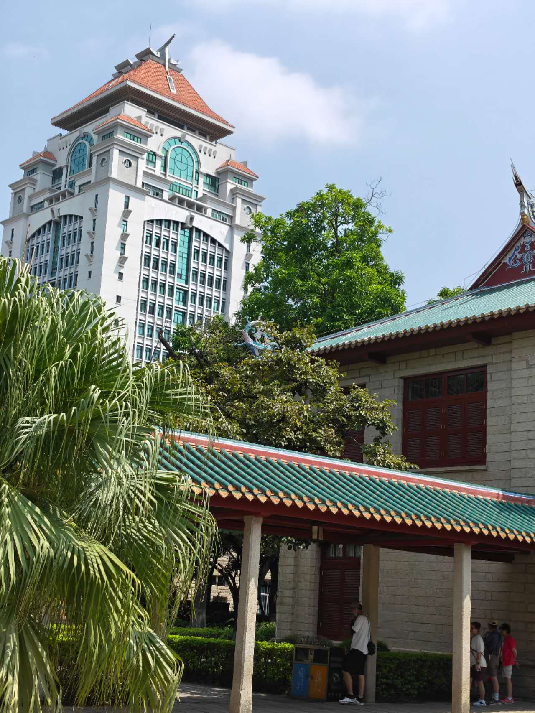
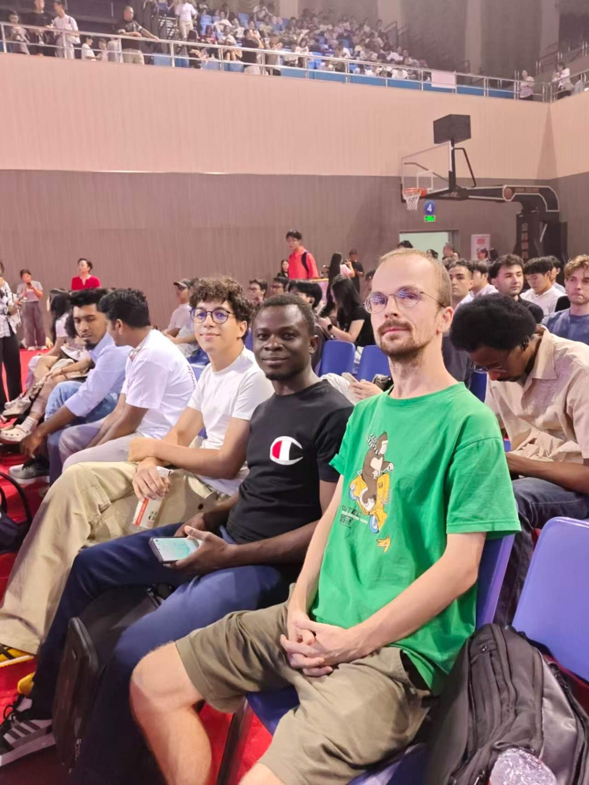
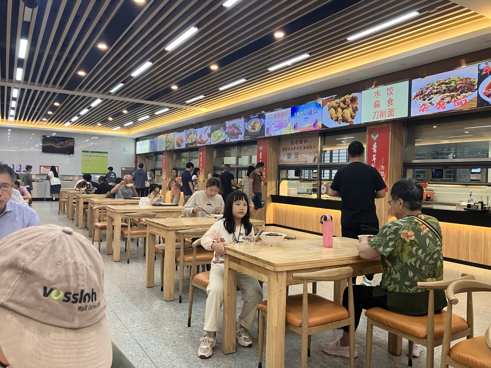

Table of Contents

1. 2026
1.1. 2026-08 August
1.1.1. 2026-08-28 Friday
Sind in Xiamen angekommen. Hotel ist etwas muffig und im Keller aber da wir sowieso schnell eine Wohnung finden wollen ist das kein Problem. Sind abends rausgegangen und zufällig in den Partybezirk von Xiamen geraten, konnten da uns eine chinesische SIM Karte besorgen. Zum Glück hatten wir Bargeld dabei sonst wäre es kompliziert geworden. WeChat Pay hat noch nicht funktioniert.
1.1.2. 2026-08-29 Saturday
Merle hat gemerkt das sie gestern ihre Kreditkarte verloren hat, WeChat Pay funktioniert immer noch nicht und wir haben kein Bargeld mehr. Haben Hunger.
Haben Bargeld abheben können und sind auf AliPay umgestiegen das scheint besser zu funktionieren. Es scheint zurzeit eine große Anti-Fraud Kampagne von der Regierung zu geben, weshalb das einrichten von den Zahlungsdiensten deutlich komplizierter ist. Von der Uni mussten wir auch schon einen Anti-Fraud Fragebogen ausfüllen, der helfen sollte gegen online Betrug zu erkennen. War wenig hilfreich da er auf chinesisch war.
1.1.3. 2026-08-30 Sunday
1.1.4. 2026-08-31 Monday
- Wohnungssuche
Waren heute Vormittag auf Wohnungssuche. Haben Vorgestern eine Marklerin kontaktiert die Wohnungen für uns rausgesucht hat. Hatten um 9:30 ein Termin mit ihr. Die dritte Wohnung war sehr schön und die Vermieter waren auch direkt vor Ort. 2 Schlafzimmer, Balkon, Küche, Esszimmer. Die Mutter von dem Vermieter (eine richtige 阿姨) wohnt neben der Wohnung und wir wurden nach der Besichtigung energisch von der 阿姨 zum Tee eingeladen und dabei mit Cola und süßen Brötchen überhäuft. Der gefragte Preis war 3600 Yuan und wir haben auf 3100 Yuan (400eur) runter gehandelt. Mietvertrag geht leider nur für 1 1/2 Jahre da danach die Wohnung renoviert wird. Warten jetzt darauf den Mietvertrag zu unterschreiben und ziehen dann heute abend vom Hotel in die Wohnung. Wohnung wird die Tage noch geputzt und Kleinigkeiten erledigt vom Vermieter. Das ganze hat insgesamt bis 11:00 Uhr gedauert, also 1 1/2 Stunden. Alles in allem angenehmere Erfahrung als die Wohnungssuche in Deutschland.
Sind erfolgreich eingezogen. Das unterschreiben des Mietvertrags hat sich noch als kompliziert erwiesen, da man mit AliPay Privatpersonen, ohne ein chinesisches Konto welches hinterlegt ist, kein Geld senden kann und auch der Betrag insgesamt beschränkt ist. Da wir 3 Monatsmieten plus Kaution an unseren Vermieter senden sollten stellte beides ein Problem dar. Daraufhin hatte der Vermieter (房东) seine Tochter gebeten, ihm ihre Bankdaten zu senden, da er anscheinend keine eigenen hatte, bzw. nicht kannte. Es scheint also bei vielen Chinesen der Fall zu sein, dass ihr komplettes finanzielle Leben über AliPay/WeChatPay geregelt wird. Auf jedenfall hat daraufhin meine Bankapp (ING) faxen gemacht und wollte mich keine Auslandsüberweisungen tätigen lassen. Nach großer Verwirrung sind Merle, die Agentin und ich daraufhin zu dem nächsten ATM gegangen um die insgesamt 12400yuan abzuheben. Diese konnte man aus welchen Gründen auch immer nur in Portionen von 2500yuan in 100yuan Scheinen abheben und auch nur 10000yuan pro Person. Da wir zu zweit waren hatte es zum Glück geklappt und wir sind mit einem gigantischen Batzen Geld zurück zum Vermieter. Der war erstaunlich wenig beeindruckt und hat gekonnt das Geld gezählt - die Umstellung von Bargeld auf AliPay scheint also noch nicht so alt zu sein.
Nachdem wir unser Gepäck aus unserem Hotel geholt hatten, wurden wir von 2 Menschen überrascht die unsere Wohnung reinigten. Der Vermieter hatte außerdem in der Zwischenzeit die Reperaturen in der Wohnung schon getätigt. Das scheint der China Speed zu sein von dem alle reden. Alles in allem scheint hier das Verhältnis von Vermieter zu Mieter eher eines zu sein von einer Dienstleistung die für den Mieter erbracht wird als die eines Bittstellers der um eine Wohnung betteln muss. Vielleicht haben wir aber auch sehr viel Glück gehabt. Da wir jetzt ein Gästezimmer mit 2 Betten haben, ist jede Person die das hier liest eingeladen rumzukommen.

1.2. 2026-09 September
1.2.1. 2026-09-01 Tuesday
- Einschreiben an der Uni
Heute hat es viel geregnet. Das einschreiben hat sich als kompliziert erwiesen, da wir Probleme hatten die Tuition zu bezahlen. Wir haben heute wieder 15000yuan in 100yuan Scheinen abgehoben, bis uns der Automat nichts mehr hat abheben lassen. Ich bin erstaunt dass mich meine Bank noch nicht gesperrt hat. Auf jedenfall wurden wir irgendwann informiert dass wir anscheinend doch schon einen chinesischen Bank Account eröffnen können um darauf dann das Geld übrweisen zu können. In den nächsten Tagen sollten wir einen dafür bekommen.
Gerade eben war ich noch in einem richtigen klassischen Supermarkt einkaufen in dem es sogar noch üblich war mit Bargeld zu bezahlen. Und zuhause ist noch unsere Nachbarin mit einer Tüte süßer Brötchen vorbeigekommen. So langsam merke ich auch das ich anfange mehr zu verstehen wenn die Leute etwas sagen, aber mehr als gar nichts ist immer noch sehr wenig.
1.2.2. 2026-09-03 Thursday
Noch einiger Verwirrung haben wir gestern ein Bankkonto eröffnet. Nachdem wir von einer Bank zur nächsten geschickt wurden, da dieses Jahr anscheinend die Industrial Bank of China für die Master Studenten zuständig ist (es gibt 4 große Staatliche Banken in China die früher für die Finanzierung von unterschliedlichen Bereichen zuständig waren, was heute noch der unterschied ist weiß ich nicht), wurden wir dort von einer sehr freundlichen jungen Frau in empfang genommen die ausgezeichnetes Englisch gesprochen hat und deren großer Traum es ist einmal nach Deutschland zu fliegen um Haxe zu essen. An sich waren alle Menschen in der Bank der freundlich und mindestens die Frau hat 1 1/2 Stunden länger gearbeitet um uns dabei zu helfen das Konto zu eröffnen. Insgesamt waren alle offiziellen Amtsbesuche so gut dass es mein Hobby werden könnte. Man kann einfach in das Establishment reinlaufen, wird sofort bedient und hat das Gefühl hat dass die Leute ernsthaft daran interessiert sind einem zu helfen. Es scheint auch personell deutlich besser besetzt zu sein als in DE sodass die Menschen dort wirklich Zeit haben einem zu helfen. Ansonsten regnet es seid gestern morgen durchgehend, mal schauen wann es aufhört. An das Wetter hier muss ich mich noch gewöhnen.
1.2.3. 2026-09-06 Sunday
Die letzten Tage waren entspannt und wir hatten wenig zutun nachdem wir Freitag das meiste organisatorische erledigen konnten. Morgen fängt die Uni an. Aus irgendeinem Grund haben wir fast nur am späten Nachmittag bis teils 10:00 Uhr abends unterricht. Heute wollten wir neue Klamotten kaufen gehen weil unsere mittlerweile auseinanderfallen. Klamotten haben wir leider keine bekommen, haben uns aber etwas hier auf der Insel umgeguckt und sind an einer riesigen Baustelle vorbeigekommen, wo die eine Brücke bauen die über 25km lang ist. Haben mittlerweile auch ein Stammlokal direkt um die Ecke zum essen wo man für ca. 2.50eur eine sehr gute Mahlzeit bekommt. Das Restaurant wird von einer Familie betrieben und der Großvater sitzt immer davor und versucht die Leute in den Laden zu bekommen, sehr freundlich sind die. Ich war an sonsten noch in der Uni Bücherei und hab mir die Internationale Sektion angeschaut. Unter der Rubrik Weltkommunistische Bewegung hatten die lustige Bücher wie die DGB Satzung oder Industriereportagen von Günther Walraff. Die werd ich mir mal ausleihen wenn mir langweilig wird. Der ein oder andere DGB Funktionär wäre sicherlich erstaunt wie die da gelandet sind.

1.2.4. 2026-09-09 Wednesday
Bin jetzt mit den ersten paar Tagen der Uni fertig. Es ist auf jedenfall sehr anstrengend, vor allem weil die Vorlesungen alle so spät aufhören. Ich habe jetzt gleich auch noch von 7 bis 9 abends Chinesisch. Wer so spät noch effektiv lernen kann weiß ich nicht. Wir waren gerade bei der Wahl des Supervisors für das Masterstudium, der angeblich deutlich mehr mit den Studierenden zutun hat als in DE, hab jetzt nächste Woche ein erstes Gespräch mit einem Doktor hier und bis Ende des Monats muss ich mich entschieden haben wer mich beaufsichtigt. Insgesamt sind wir im Jahrgang 12 Chinesen und 4 Ausländer. Außer Merle und mir ein junger Herr aus Marokko der schon seinen Bachelor in China gemacht hat und ein Mann mitte 30 aus Togo, der sich weiterbilden will.

Der Professor der alles koordiniert - Ato - ist wirklich sehr nett und legt großes Wert darauf dass sich alle wohl fühlen. Studieren ist auf jedenfall sehr anders als in Deutschland. Ob es besser oder schlechter ist mag ich noch nicht zu sagen, da ich das deutsche System auch sehr gerne mag.
1.2.5. 2026-09-11 Friday
- Erste Gedanken
Mittlerweile ist die erste Uniwoche vorbei und wir sind schon 2 Wochen in China, da dachte ich ich reflektiere ein wenig darüber. Einige Erwartungen wurden erfüllt, andere nicht. (Ich bin zB leider immer noch unterdurchschnittlich groß in meiner Altersgruppe. Die Chinesen scheinen genauso wie wir zu wachsen wenn sie seit ihrer Geburt Top Nahrung bekommen)
Ich bin wirklich erstaunt darüber wie hoch die Lebensqualität hier ist. Das Leben hier ist sehr stark im Kiez organisiert und dort ist alles Fußläufig erreichbar was man braucht, essen, einkaufen, öffentlicher Park. Gerade die älteren Menschen scheinen hier wirklich ein extrem gutes Leben zu führen. Ich lauf hier immer wieder unserer Nachbarin über den Weg und mal ist die im Park mit anderen Leuten tanzen, mal spielt sie irgendwo Karten, mal sitzt sie irgendwo zum Tee trinken oder zum essen (Heute hab ich sie beim essen getroffen und sie hat mir ein Backfisch auf dem Weg zur Uni mitgegeben) und scheint alles in allem einfach eine wirklich gute Zeit zu haben. Gerade die öffentlichen Parks in China sind wirklich fantastische Orte an dem gemeinsam getanzt, gespielt oder gesungen wird. Hier muss niemand im Alter allein sein der es nicht will.
Merle ist leider heute etwas krank geworden, weswegen wir heute vorsichtshalber zum Krankenhaus gegangen sind um sicherzugehen dass es nichts schlimmes ist. Von uns zuhause sind 2 Krankenhäuser Fußläufig erreichbar, wovon eines extra für die Universitätsstudenten ist. Dort angekommen musste Merle kurz in ein Wartezimmer und ist dann relativ schnell zu einem Arzt gerufen worden, wo sie ihre Symptome nennen musste. Nachdem der einen kurz auscheckt kriegt man dann einen Liste mit Dingen, die die überprüfen wollen. Man geht dann von Tür zu Tür um die Liste abzuarbeiten. In einem Raum sitzt zB ein Arzt der den ganzen Tag nur Blut abnimmt, im anderen einer der EKG macht usw. Das hat schon sehr stark was von Fließbandarbeit hat aber zur Folge das man extrem schnell behandelt wird und man sehr schnell seine Diagnose hat. Gerade für die Erstuntersuchung wirkt das wie eine wirklich gute Lösung. Merle musste am Ende eine halbe Stunde warten um das Ergebnis vom Bluttest zu bekommen und hat zum Glück nur ein leichtes Fieber. Der Besuch beim Krankenhaus hat insgesamt ca. 20eur und das Medikament, was Merle verschrieben bekommen hat, keine 10ct gekostet.
Zur Uni: Der Anteil der international Studierenden hier ist sehr gering. Interessanterweise sieht man einen großen Unterschied zwischen den Personen die hier ein Austauschsemester machen, meist Europäer oder Amerikaner, und denen die hier vollständig Studieren, meist Afrikaner oder Asiaten. Es würde mich nicht wundern wenn wir die einzigen Europäer sind, die ihren ganzen Master hier machen. Das Niveau des Studiums scheint nicht so hoch zu sein, wobei ich nicht sagen kann ob es an China liegt oder einfach generell an dem Studiengang Urban and Rural Plannign und ich das gleiche sagen würde wenn ich in Deutschland studieren würde. Hier ist meine Hoffnung aber dass dadurch dass das komplette zweite Jahr Selbststudium und Thesis Writing ist, ich dann gut in meinem eigenen Tempo lernen kann. Anzumerken ist dass das Deutsche Studium hier dafür bekannt ist, dass es schwer ist zu bestehen und das es keine Studiengebühren gibt. Die Studiengebühren wurden hier nach 1989 langsam wieder eingeführt. Da man aber für extrem wenig Geld in der Uni wohnen kann (ca. 200eur im Jahr) und essen in China extrem günstig ist, gibt es hier bis auf Studiengebühren eigentlich keine weiteren kosten.
An der Uni selbst fällt mir sonst noch auf, dass die Studenten die Uni sehr ernst nehmen, feiern und sowas scheint es hier nicht wirklich zu geben. Zumindest nicht in dem Rahmen wie es in DE der Fall ist wo man fast dazu genötig wird sich als Ersti in den ersten Uni Wochen konstant zu betrinken. Stattdessen müssen die anscheinend in den ersten 14 Tagen ihres Bachelorstudiums eine grundlegende Militärausbildung absolvieren. Weshalb zur Zeit überall Menschen in Uniform rumlaufen. Beigebracht bekommen die da hauptsächlich Maschieren, gerade Stehen, Erste Hilfe und Betten machen. China hat dafür keine Form der Wehrpflicht. Ich würde außerdem sagen das man der Insel anmerkt dass sie strategisch wichtig für Chinas Militär ist, da es hier schon vermehrt Militärische Sperrzonen gibt.
Sonstiges: Interessanter weise ist die Insel Jinmen keine 10km von Xiamen entfernt und unter Taiwanesicher Verwaltung. (Das lohnt sich wirklich mal auf der Karte anzuschauen. An der nächsten Stelle ist es keine 3km entfernt). Auf der Insel selber wohnen 140.000 Personen die sich, laut Wikipedia, als Kinmenesen oder Chinesen identifizieren, nicht viel von von der Unabhängigkeit Taiwans halten, aber einen Taiwanesichen Pass haben. Historisch waren auf dieser Insel viele Soldaten stationiert, es wurde aber seit den 1990 von 25.000 auf ca. 3000 Soldaten reduziert. Seit 2024 sind angeblich jedoch wieder US-Soldaten als Ausbilder auf der Insel stationiert. (Man stelle sich nur vor was in Deutschland abgehen würde, würde Russland Soldaten auf einer Insel ähnlich weit weg vom Festland wie Juist stationieren). Ich mache mir denoch keinerlei Sorgen, da ich glaube das weder China noch Taiwan ein Interesse daran hat den Status quo schnell zu ändern. (Taiwan kann gar keine andere Position einnehmen und China scheint einfach weiter ökonomische Verbindungen auszubauen bis sich die Frage von selbst klärt und die USA ist zur Zeit zum Glück nicht in der Lage ist hier allzu großen Unfug zu treiben). Da habe ich mir in Deutschland ehrlich gesagt deutlich mehr sorgen gemacht, dass unsere Regierung einen offenen Konflikt mit Russland vor den Zaun bricht.
1.2.6. 2026-09-16 Wednesday
- Alle reden vom Wetter, ich auch
Das Wetter ist hier erstaunlich konstant zwischen 27 und 30 Grad. Also 27 Grad Nachts und 30 Grad Tagsüber. Was sobald die Sonne untergegangen ist, sehr angenehm ist. Nur Tagsüber ist es etwas ekelig wegen der sehr hohen Luftfeuchtigkeit. Da die Innenräume aber alle klimatisiert sind kann man sich immer schnell abkühlen. Außerdem sind die Tage hier erstaunlich kurz und um halb 7 geht schon die Sonne unter.
Gestern abend habe ich draußen noch ein wenig Sport gemacht und natürlich waren da auch die Muskelbepackten Rentner die unglaubliche Dinge machen. Der eine hing an einer Stange und hat seinen Unterkörper immmer nach oben gehieft bis seine Beine über seinem Kopf waren oder ein anderer hat einen Handstand auf einem Barren gemacht und dann im Handstand liegestütze. Da kann ich noch viel von lernen.
1.2.7. 2026-09-20 Sunday
Heute ist Sonntag aber ich habe Universität und die Menschen müssen arbeiten. In China gibt es mehrere male im Jahr das mehrere Feiertage direkt hintereinander sind. Also wie bei uns Ostern oder Pfingsten. Aber irgendwann haben die Chinesen beschlossen das nur Montag bis Mittwoch freihaben deutlich weniger cool ist als die ganze Woche frei zu haben, weswegen Arbeitstage 'ausgeliehen' werden von den Wochenenden die davor und danach sind. Also ich muss heute und in ein paar Wochen wieder Sonntags zur Uni und heute wird auch ganz normal gearbeitet aber dafür haben wir die ganze erste Oktober Woche frei anstatt nur die halbe Woche. Eigentlich ein ganz gutes System meiner Meinung nach. Einer der Gründe warum das eingeführt wurde ist das dadurch die ganzen Arbeiter die weit weg von ihren Heimatdörfern in den Städten arbeiten so genug Zeit haben nach Hause zu ihrer Familie zu kommen.
Gestern waren wir noch Klamotten shoppen und die shopping Malls sind wirklich gigantisch hier. Zusätzlich sind sie häufig auch noch direkt neben den U-Bahn Stationen weswegen man aus der U-Bahn direkt in das Center gehen kann ohne an die frische Luft zu gehen. Dadurch waren wir gestern 6 Stunden lang in verschiedenen gigantischen Shopping Centers ohne einmal draußen zu sein.
1.2.8. 2026-09-28 Monday
Am Wochenende war das Mitte Herbst Fest was ein ziemlich großes Fest hier zu sein scheint. Man isst Mooncakes und überall kann man ein Würfelspiel spielen. Bei dem spiel darf man einmal 6 Würfel werfen und je nachdem was man geworfen hat kann man unterschiedliche Sachen gewinnen. Am besten sind 6 mal die 4. Keine Ahnung wieso. Ich hab einmal vor der Uni Cafeteria mitgemacht und 3 mal die 4 geworfen und eine kleine Cola gewonnen. Die steht jetzt bei uns im Schrank auf unbestimmte Zeit.
Cafeteria: Wo ich schon die Cafeteria erwähnt habe kann ich mal ausführlicher darüber berichten. Auf dem gesamten Unigelände gibt es Mensen bei denen man von morgens um 6 bis abends um 7 essen kaufen kann. Nur von 13:10 bis 16:00 macht die Mensa eine Mittagspause, was ich ehrlich gsagt bei einer Mensa nicht so ganz verstehe da ich in der Zeit eigentlich immer esse, aber naja da muss ich meinen Essensrythmus anpassen. Bisher war ich in 5 verschiedenen Mensen wovon fast alle 2 Stockwerke mit unterschiedlichen Essen haben. Das essen ist hier dazu noch sehr günstig und ziemlich gut zubereitet. Aber ab und zu muss ich mir auch mal Bratkartoffeln oder andere Heimische Gerichte kochen. Immer nur chinesisch essen kann ich auch nicht. Nur das gute deutsche Brot fehlt mir, das kriegt man hier nicht.
Schwimmen: Merle und ich haben den Schwimmsport für uns entdeckt da die Uni top Schimmanlagen direkt neben unserer Wohnung hat. Eintritt ist da für Studenten 2rmb, also ca. 30cent. Dazu kommt noch dass das wirklich große Becken auf der Dachterasse von einem größeren Gebäude ist und man draußen unter freien Himmel schimmen kann und dabei sich die Berge im Hintergrund oder die Stadt drumherum anschauen kann. Da kann man nur Schimmbegeistert werden. An sich macht es einem die Uni extrem leicht sport zu machen da die ganzen Sportplätze Fußläufig von den Hörsaalen entfernt ist. Da kann man dann abends auf dem weg nach Hause oder zwischen zwei Vorlesungen sich noch schnell bewegen.
WeChat: WeChat ist der Messanger auf dem die komplette kommunikation abläuft, also auf dem man mit seinen Professoren, Freunden, Familie, einfach jedem kommuniziert. Und auf irgendeinem Grund hat kein einziger Chinese seinen Namen dort angegeben oder als Profilbild ein Bild von sich. Das hat zur Folge dass man in irgendwelchen Gruppen ist und nicht die leiseste Ahnung hat wer die Leute da eigentlich sind. Mich hat letzten zum Beispiel jemand angeschrieben aus meinem Jahrgang die meinte, dass sie den gleichen Supervisor hat wie ich. Ich hab aber bis jetzt keine Ahnung wer diese Person eigentlich ist, ob ich schonmal mit ihr geredet habe oder sonst was. Was ich auch seltsam und ziemlich lustig finde ist, dass die meisten jungen Chinesen die seltsamsten Profilbilder haben. Die meisten haben irgendwelche Anime Bilder, aber lustige Bilder die ich auch schon gesehen habe waren Justin Biber in einer Badewanne oder ein Shrekbaby was geschminkt ist. In Deutschland gibt man immer acht besonders professionell gegenüber seinen Profs aufzutreten aber hier ists denen komplett latte. Auf der anderen Seite haben die Profs auch manchmal Animebilder als Profilbild, die sind dann aber nicht so edgy.
1.3. 2026-10 October
1.3.1. 2026-10-05 Monday
Sicherheit Egal was man machen will, immer gibt es hier eine Sicherheitskontrolle. Wenn du in die Uni willst, muss man durch ein Gate das mit Gesichtserkennung aktiviert wird, ebenso in die Bücherei usw. Bei bestimmten Sachen wie bspw. der Metro muss man zusätzlich noch seinen Rucksack durch einen Scanner packen. Ich finde es in der Hinsicht verwunderlich, dass ich nicht den Eindruck habe, dass die Sicherheitskontrollen unbedingt für mehr Sicherheit sorgen, da ich mir nicht vorstellen kann dass hier irgendjemand klaut oder sonst irgendwas machen würde was durch die Sicherheitskontrollen unterbunden wird.
Ich habe bspw. vor kurzem mir online was bestellt um auszuprobieren wie das hier funktioniert und das Paket wurde in eine nahegelegene Paketstation geliefert. Die Paketstation war ein kleiner Laden in dem ganz viele Pakete nummeriert rumstanden. Aus denen musste ich mir dann selber mein Paket raussuchen, hätte also problemlos auch jedes andere Paket mitgehen lassen können. Paketdiebstahl scheint hier also kein größeres Ding zu sein (im Gegensatz zu DE), sonst wäre ich mir sicher dass der Prozess anders organisiert wäre. Zeigt also dass auch ohne Sicherheitskontrollen sich die Menschen im Zaum halten können.
Zusätzlich finde ich spannend wie das Sicherheitspersonal ausgerüstet ist. Während es in DE ja mittlerweile üblich ist, dass die Polizei dann doch größtenteils junge Männer mit zu viel Testosteron, mindestens einer Handfeuerwaffe aber auch oft einer halbautomatischen Waffe ist. Oder wenn ich an meinen letzten Frankreich-Urlaub zurückdenke, direkt Soldaten in voller Ausrüstung, also mit vollautomatischen Sturmgewehren und Tarnkleidung, wo ich mich frage warum die die Innenstadt von Straßburg kontrollieren als wären wir in einem aktiven Kriegsgebiet, und bei wem das bitte für ein größeres Sicherheitsgefühl sorgen soll (obwohl ich eh nicht denke dass ein erhöhtes Sicherheitsgefühl die Intention der Regierung dabei ist, dafür gibt es günstigere und effektivere Maßnahmen). Besteht das Sicherheitspersonal hier meistens aus Männern um die 60, die mit Käscher und Schildern ausgestattet sind. Also Werkzeuge zur nicht verletzenden Immobilisierung von Personen. Außerhalb vom Flughafen habe ich bisher noch keine Schusswaffen gesehen. Da waren wir in Europa vor vielen Jahren auch schon mal deutlich weiter, und ich denke es hat viele politische Gründe warum die Polizei immer aggressiver in DE auftritt. Obwohl natürlich auch klar ist dass in China, wenn richtig was abgeht innerhalb kürzester Zeit besser ausgerüstete Polizisten da wären, aber die Frage bleibt natürlich wie wird öffentlich aufgetreten und warum und worin werden die Polizisten trainiert, also im einsatz von Käschern oder nicht.
Sonstiges Ansonsten noch ein lustiger Schwenk auf mein Leben. Vor kurzem war ich in einem Geschäft in dem Tee verkauft wurde und hatte einen Tee bestellt. Der Tee war super und ich habe mich direkt mit dem Personal angefreundet. Auf jeden Fall meinten die dann als ich bezahlen wollte, dass ich nicht zahlen muss. Das war mir etwas unangenehm aber ist ja nett. Auf jeden Fall stellte sich dann später heraus, dass man in dem Laden einfach umsonst Tee trinken kann, weil das ja eine Dienstleistung beim Shoppen ist. Ich hab das am Anfang erst überhaupt nicht verstanden, weil man in DE ja selbst bei einem Edelfriseur bei dem man 100 Eur für den Haarschnitt zahlt, noch für den Kaffee extra zahlen muss. Ist aber anscheinend üblich hier in China.
Heute war auch wieder eine ähnliche Situation. Ich war an einem Wasserspender um mir Wasser abzufüllen, worauf mir eine Dame aus einem Laden zugewinkt hat um mir ein Wasser mit Limetten anzubieten. Ich hab das natürlich direkt abgelehnt, da mein deutsches Gehirn direkt dachte: Oh nee, dafür muss ich bestimmt 4 Eur zahlen, obwohl die mir in Retrospektive das natürlich auch für umme gegeben hätte. Ich denke sich die 28 Jahre in denen man selbst fürs Scheißen gehen extra zahlen muss abzugewöhnen, dauert noch etwas Zeit.
Auch noch grandios, die ausländischen Studierenden (zumindest die meisten aus Afrika und Europa) haben sich zum Fußball spielen zusammen gefunden, da spielen wir jetzt manchmal abends mit.
1.3.2. 2026-10-09 Friday
- Sie sind einfach Macher
Ich habe meine Lieblingskantine bei den Juristen gefunden. Das Hauptgebäude der Juristen ist in einem Wohngebiet und deren Kantine ist Teil des Gemeinschaftsküchen für Senioren Projekt, wovon es mittlerweile angeblich 82000 Kantinen Landesweit gibt, die 4mio Senioren pro Tag mit Essen versorgen, tendenz steigend. Die haben hier einfach das Problem analysiert, dass Senioren oft an Vereinsamung leiden und Probleme mit essen besorgen haben, haben dann nachgedacht wie man das Problem lösen kann. Haben daraufhin gemerkt dass sie ja eh schon öffentliche Kantinen von Unis, Stadtregierung oder Unternehmen haben, die außerhalb der Stoßzeiten ja kaum ausgelastet sind. Und sind dann zum Schluss gekommen, dass man das ja verbinden kann! Die Kantinen sind länger ausgelastet die Anwohner drumherum haben einen guten Ort um zu essen und um sich zu begegnen und man kann gleichzeitig noch das Essen für Senioren und Bedürftigte Subventionieren um gezielt einen Sozialen Ausgleich herzustellen. In der Praxis werden auch ganz neue Kantinen für die Bevölkerung aufgemacht und es ist Teil der 15-Minuten Stadt in der alle Versorgungsmöglichkeiten innerhalb von 15-Minuten Fußweg erreicht werden soll und die meisten Kantinen sind mittlerweile echte Gemeinschaftküchen und kein reiner Seniorentreff.

An sich merkt man hier immer wieder, dass jemand eine prakmatische, gute Idee hatte und die dann einfach umgesetzt wird. Ich bin letztens zum Beispiel aus der Metro ausgestiegen um am Ausgang der Station hingen kleine Papierkarten mit Wegbeschreibungen zu nahegelegenden Orten von Interesse (also Uni, Stadtmuseum etc) die man sich als wegweiser abreißen konnte.
Die lokalen Regierungen haben relativ großen Spielraum Dinge auszuprobieren und Dinge die dann besonders gut funktionieren werden dann auf größerer Ebene weiter ausgerollt.
1.3.3. 2026-10-27 Tuesday
Merle hat angefangen Basketball zu spielen. Hier gibt es echt viele Aktivitäten an denen man teilnehmen kann, dass einzige Problem ist, dass es sehr verwirrend ist herauszufinden was es gibt. In der Regel werden Dinge wie Sportteams, oder Malkurse etc. von Studenten selber organisiert und gefühlt der einzige Weg herauszufinden, dass es existiert ist zufällig mit einer Person zu sprechen, die davon weiß um dann in deren WeChat Gruppe aufgenommen zu werden, da es kein offizielles Portal gibt wo alles ausgelistet ist. Die Teams etc. sind aber dennoch offiziell und scheinen auch zugang zu Geld und so zu haben. Etwas verwirrend aber so ists deutlich einfacher selber was in Gang zu setzten, da man nicht erst ein halbes Jahr einen Trainer Schein machen muss. Merle hat zum Beispiel direkt nach dem erten training ein Basketball und ein Trikot bekommen ohne dafür bezahlen zu müssen und durfte 2 Tage später direkt an einem Spiel teilnehmen. Außerdem ist es so, dass jedes Department seine eigenen Sportteams hat, also Mathematik, Ökonomie, Architektur u. Civil Engineering haben alle ihre eigenen Fußball, Basketball Teams, die dann gegeneinander in der Uni Liga gegeneinander antreten. Da die Uni alleine auf diesem Campus 16 Basketball Courts und 2 große Fußballfelder, die alle gut genutzt werden, hat, finden sich auch genügend Spieler.
Was mich auch noch komplett aus den Socken gehauen hat, ist, dass jedes Department seine eigenen Counsler (辅导员) hat, die für das wohlergehen der Studierenden da sind. Die haben sich am anfang kurz bei uns vorgestellt, ich habe jetzt aber erst so richtig verstanden wofür die da sind, nachdem mir ein Freund aus Pakistan, der bereits in China seinen Bachelor gemacht hat, es erklärt hat und ich noch etwas recherchiert habe. (Das scheint hier öfter ein Problem zu sein dass sehr viele Dinge einfach implizit klar sind für die Chinesen, aber für uns Ausländer nicht).
Die Counsler sollen junge Mitglieder der KP Chinas sein, die einen Master Abschluss oder höher in Psychologie oder Ideologischer und Politischer Bildung haben. Es gibt einen Vollzeit Counslor auf 200 Studenten. Ich hab das folgende mal aus Deepseek kopiert, das sind laut Bildungsministerium die Aufgaben der Leute.
- Ideologische und theoretische Bildung sowie Werteorientierung: Die Kernfunktion – die Studierenden bei der Entwicklung ihres Weltbilds, ihrer Lebenseinstellung und ihrer Werte zu leiten.
- Aufbau von Partei, Jugendverband und Klassen: Verwaltung der studentischen Parteizweige und Klassenausschüsse, Förderung studentischer Führungskräfte und Entwicklung von Parteimitgliedern.
- Förderung der Lernkultur: Weckung des Lerninteresses, Anleitung zu Lernmethoden und Organisation außerschulischer akademischer Praxisaktivitäten.
- Verwaltung der täglichen studentischen Angelegenheiten: Militärische Ausbildung, Bewertung von Stipendien und Fördergeldern, Studienkredite, Werkstudienprogramme und Lebensberatung.
- Psychologische Gesundheitserziehung und Beratungsarbeit: Dies ist der einzige Punkt, der „Beratung" betrifft; die Vorschrift stellt ausdrücklich fest, dass er darin besteht, die psychologische Gesundheitsbildungseinrichtung der Hochschule bei der Durchführung von Erstscreening, Beratung und Aufklärungsaktivitäten zu unterstützen.
- Online-ideologische und politische Bildung: Nutzung neuer Medien für Online-Interaktion, Gedankenlenkung und psychologische Beratung.
- Reaktion auf Krisenvorfälle auf dem Campus: Sicherheitserziehung, Erstbehandlung von Notfällen und Berichterstattung.
- Karriereplanung sowie Berufs- und Gründungsberatung: Karriereplanung, Unterstützung bei der Jobsuche und Ermutigung der Studierenden, an der Basis zu arbeiten.
- Theoretische und praktische Forschung: Teilnahme an der Forschung zur ideologischen und politischen Bildung.
Wie sieht das ganze in Praxis aus? Eine unserer Counslerin hat bspw am Wochenende ein spaß Badminton Turnier für die Uni organisiert, wo Merle und ich mitgemacht haben. Da haben wir im Team ein paar kleine lustige Badminton spiele gespielt und am Ende gabs kleine Preise.
Oder die Person aus Pakistan hat mir zB erzählt dass er im Bachelor Motivations und Schlafprobleme hatte. Die Counsler haben im dann Termine bei einem richtigen Psychologen organisiert und waren immer für ihn da wenn er sie angeschrieben hat (auch um 3 Uhr nachts). Er meinte wenn er am Wochenende schlechte Laune hatte und nichts zutun dann hat er einen der Counsler angerufen und die sind dann rumgekommen und haben mit ihm abgehangen.
Wenn wir Probleme bei der Wohnungssuche gehabt hätten, hätte die Person und dabei geholfen usw.
Vor dem Hintergrund dass ich nicht wenige verdammt intelligente Personen kenne, die in meinem Mathe Bachlor Aufgrund des Stresses Depressionen entwickelt haben haut mich das noch mehr aus den Sochen. Hier wird sich wirklich um das wohlergehen der Studis gekümmert.